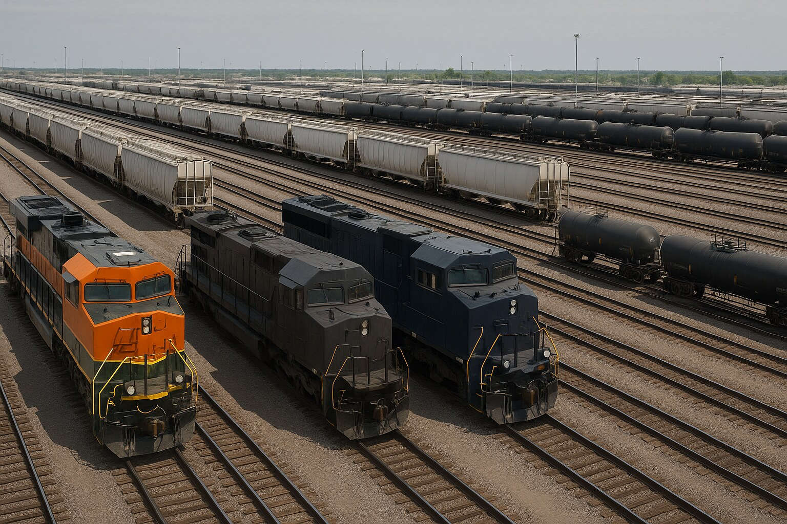
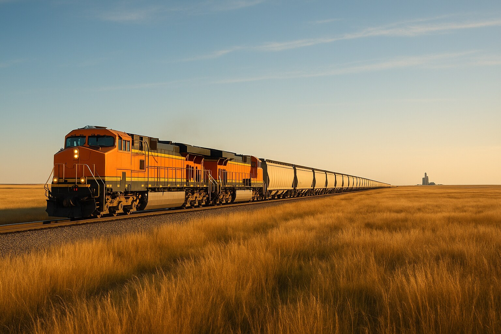

An outsourced rail department for shippers: routing and pricing, railroad coordination, transload, demurrage control, equipment, and railcar brokerage.
Steel Wheel Logistics is a rail logistics company. We run the rail function for shippers who move bulk commodities by rail and do not have, or do not want to build, a rail desk of their own. The services below can be engaged a piece at a time. Most shippers without a rail person on staff want all of it, ongoing — that’s our outsourced rail department: routing and pricing, carrier outreach, car supply, demurrage, transload, and railcar brokerage, handled week over week so you don’t have to build the expertise in-house.

We route and price your rail moves and deal with the railroads on your behalf. Working directly with Class I carriers (BNSF, UP, CSX, NS, CN, CPKC) and regional short lines is slow and full of jargon; we have the contacts and the patience to reach the right people and get real rates back, so you can stop chasing. Run an indicative rail freight quote first if you want a ballpark before we source the carrier number.

We coordinate full carload and unit train moves for high-volume bulk shipments: we line up the carriers and the cars, and we never take title to the freight, so your dollars stay in your supply chain.
When the origin or destination is not rail-served, we coordinate the rail-to-truck handoff through our transload network and manage the facility logistics that keep your commodity pipeline flowing. Full detail on our rail transload services page; search 800+ sites in the transload directory.

Demurrage is the number one surprise cost for rail shippers, and most of it is preventable. We find the operational causes behind the charges, pre-plan car supply and loading windows to keep your free time intact, and open the right conversation with the railroad on the charges that should not stand.
Try our free demurrage calculator to estimate charges on a specific scenario.

Whether you run your own railcars or pull from the railroad’s pool, the day-to-day tracking, ordering, and diverting still falls on the shipper. We handle that coordination so you can focus on the load.
As a railcar broker and rail equipment broker, we source lease and sublease cars for shippers who need equipment, place surplus cars for lessees who have more than they can use, review lease renewals against the current market, and settle the car type before you shop. We do not own a fleet, so we have no reason to steer you toward one lessor’s cars. Full detail on our railcar brokerage page.
Check the market yourself with our free railcar lease rates tracker and sublease board.
We work with shippers across industries that rely on rail to move the stuff that keeps America running:
If you move high-volume commodities and rail could beat your current trucking cost, we should talk. See our rail vs. truck cost comparison guide to benchmark your lane.
A rail logistics company. General logistics providers cover every mode — truck, rail, ocean, air — and treat rail as a side line. We don’t. We’re rail only: an outsourced rail department for shippers, and a railcar broker on the equipment side. Working directly with the railroads is slow and full of jargon, so our job is to make it easier for you — sourcing rates, coordinating carriers, and solving rail problems day in and day out. We coordinate the move; we don’t haul the freight. If your shipment doesn’t belong on rail, we’ll tell you.
We work with small and mid-sized shippers. Single carloads and manifest shipments are our bread and butter — if you’re moving at least one car a month on a steady lane, we can help. Larger volumes scale up the same way. Read our first-time rail shipper guide if you’re just starting.
All Class I carriers — BNSF, Union Pacific, CSX, Norfolk Southern, CN, CPKC — plus regional short lines and terminal carriers where those connections matter. Each has different pricing dynamics and different responsiveness. We help you pick the right routing and reach the right people.
Yes. Demurrage is the #1 surprise cost for new rail shippers. We pre-plan car supply, track constructive placement, and coordinate loading windows to keep your free time intact. Our demurrage avoidance guide covers the basics.
Yes. We coordinate rail-to-truck handoffs at transload facilities across the network. If your customer isn’t rail-served, we’ll design a route that gets the commodity there via rail for most of the distance and truck for the last leg.
Yes. On the equipment side we work as a railcar broker: sourcing lease and sublease cars when you are short, placing surplus cars when you are long, and reviewing lease renewals before you sign. See our railcar brokerage page.
Rail freight pricing has several layers — line-haul rates, fuel surcharges, accessorials, and car hire. We help you source rates across the full stack, not just the base line-haul. See how rail pricing actually works for a breakdown, or run a quick estimate with our rail rate calculator.
Guides from our blog that cover the topics above in more depth:
If you want to build in-house rail expertise, our free courses cover everything from fundamentals to advanced topics: